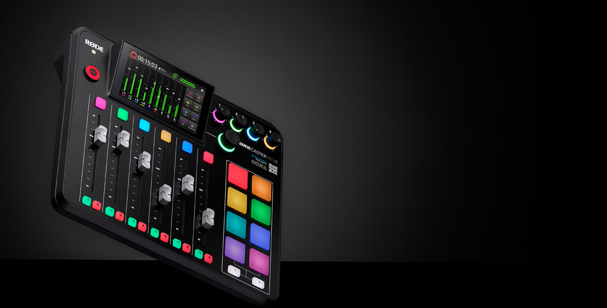
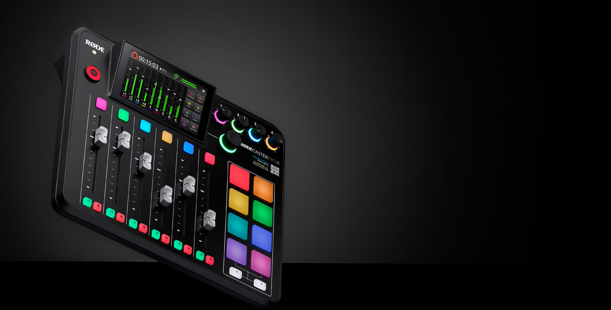

The Revolution Is Here
The RØDECaster Pro II is the world's most powerful all-in-one audio solution for streamers, podcasters, musicians, and creators. Take your content to the next level.

Your Search For The Perfect Headphones Is Over
Experience sound like never before with the NTH-100s. Exceptional sonic performance, superior comfort and iconic looks that inspires creativity.


Studio-Quality Recording, Made Simple
The NT-USB is a studio-quality USB condenser microphone that offers impeccable audio, elegant looks and premium features, all in an easy-to-use form factor, the NT-USB will have you sounding like a pro in seconds.
Explore The RØDE Range


Latest From The RØDE Blog
XLR vs USB Microphones:Which is Best for You?

We explore the differences between XLR and USB microphones, the advantages of each and which type is best suited to your needs.
The Difference Between Large-Diaphragm and Small-Diaphragm Condenser Microphones

We explore the difference between large- and small-diaphragm condenser microphones, and what each is best used for.
What is a Condenser Microphone and When to Use One

Learn more about the different types of condenser mics, how they work and the best applications for using them.
Firmware Version 1.0.7 for the RØDECaster Pro II is Available Now

Firmware version 1.0.7 includes key feature additions, such as custom routing for USB and Bluetooth outputs, and more.